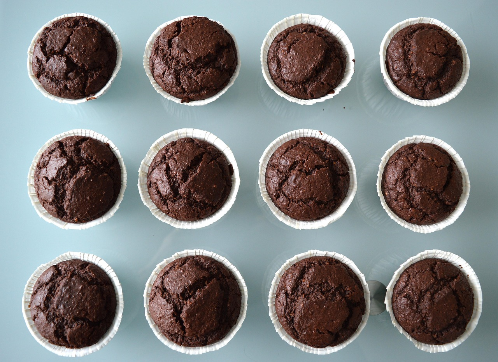

Muffins
Home

image by edithsa, pixabay
Description
Incredibly delicious chocolate Muffins, they are not only easy to make they're quick to make as well
Ingredients
- 2 dl caster sugar
- 2 tsp baking soda
- 1/2 tsp salt
- 1 tsp vanilla sugar
- 2 dl wheat flour (2 dl corresponds to 120 g)
- 1 dl cocoa
- an egg
- 1 dl milk
- 1 dl netural canola oil
- 1 dl hot water
- 10 muffin tins
What to Do
- Set the oven to 175°C.
- Mix sugar, baking powder, salt and vanilla sugar in a bowl.
- Sift in flour and cocoa.
- Whisk together eggs, milk and oil quickly in another bowl. (Important that it is a completely neutral oil.) Stir in the dry ingredients preferably with a balloon whisk.
- Add the hot water, little by little. Mix to a smooth batter.
- Divide the batter into the muffin tins placed in a muffin tray.
- Bake in the middle of the oven for about 25 minutes. Feel with a test stick so that the muffins are dry in the middle. Remove and let cool on a wire rack.
And Now enjoy